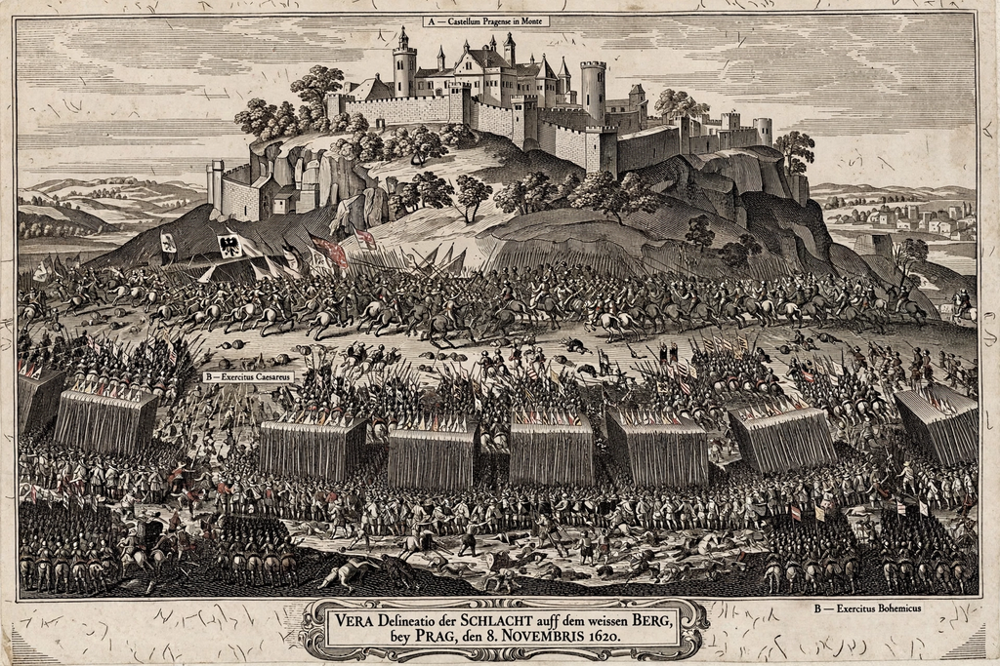

Thirty Years' War

The Thirty Years' War, fought primarily in Central Europe between 1618 and 1648, was one of the most destructive conflicts in European history. Initially a war between Protestant and Catholic states within the fragmented Holy Roman Empire, it gradually developed into a more general conflict involving most of the great powers of Europe, driven less by religion and more by political rivalry.
Course of the war
The war began with the Defenestration of Prague (1618), when Bohemian Protestant nobles threw imperial officials from a castle window and offered the Bohemian crown to Frederick V of the Palatinate. His defeat at the White Mountain (1620) opened the Bohemian and Palatine phases, in which imperial forces under Tilly and Wallenstein triumphed; the Edict of Restitution (1629) marked the high point of imperial power. Denmark's intervention (1625–29) failed, but Sweden under Gustavus Adolphus invaded in 1630, winning at Breitenfeld (1631) though the king died at Lützen (1632). From 1635 Catholic France, under Richelieu, openly subsidised and then joined the war against the Habsburgs, turning it into a Bourbon–Habsburg struggle fought largely on German soil.
Devastation and peace
Mercenary armies living off the land, together with plague and famine, killed millions; parts of Germany may have lost a third or more of their population. The Peace of Westphalia (1648) — the treaties of Münster and Osnabrück — ended the war, confirmed the religious settlement of Augsburg extended to Calvinists, recognised Dutch and Swiss independence, and left the Empire a patchwork of effectively sovereign states. France emerged as Europe's rising power and Spain's decline was confirmed.
See also: Holy Roman Empire, Feudalism, Gustavus Adolphus.